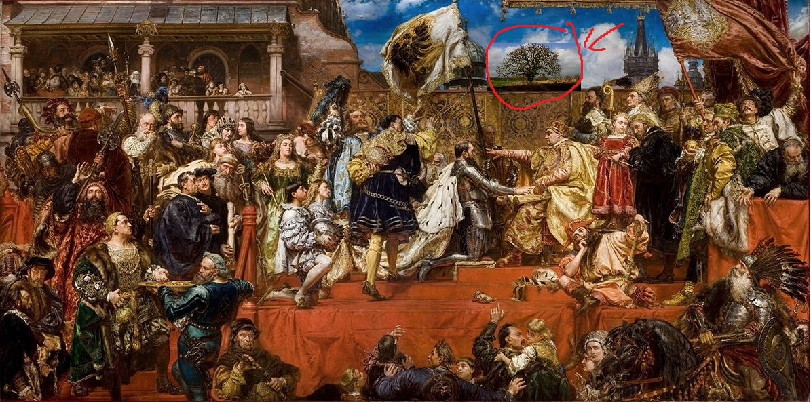
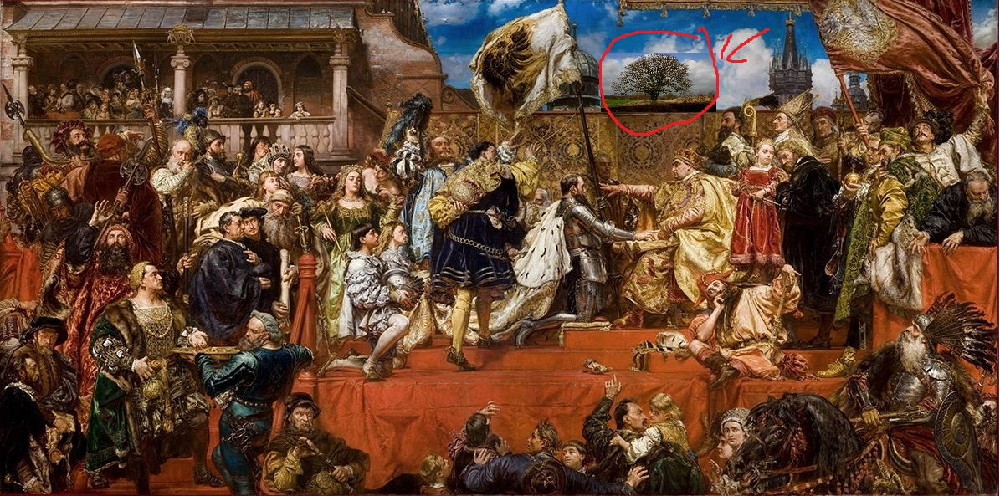

Jest rok 1366. Ciepły poranek w górach świętokrzyskich. Na ziemię, przy polnej drodze w
okolicach wsi Bartków, spada mały żołądź. Na ten żołądź co jakiś czas spada kropla deszczu. Żołądź
kiełkuje. A z niego przez następne 654 lata wyrośnie drzewo, które my ziemianie znamy jako Dąb
Bartek – Drzewo, które niejednokrotnie zmieni bieg historii Polski jak i świata, czego przykłady
znajdziemy chociażby w Biblii. Król Bolesław Chrobry w swoich zapiskach sam przyznał: „Nigdy nie
widziałem czegoś takiego jak to drzewo. Może dlatego, że go nie widziałem, bo zmarłem przed 1366
rokiem”. To podkreśla tylko wagę Dębu Bartka w dziejach historycznych (dokładnie około kilka ton).
Jednak nie po to otworzyłeś ten artykuł, prawda? Rozumiem cię. Sam nigdy nie otworzyłbym tego
artykułu gdybym chciał dowiedzieć się czegoś o heksakosjoiheksekontaheksafobii. Więc przejdę do
rzeczy.
Zapytasz pewnie, jak drzewo ma prowadzić biznes albo prowadzić filantropię? Szczerze mówiąc nie wiem. Właśnie to skłoniło mnie do wysnucia pożalsięboże okropnej teorii. Jeżeli nie bizmesmen, nie filantrop, to kto? Dokładnie o tym samym pomyślałem. Pedofil… Ale zapytasz się, czy te konary mogą kłamać? Ja odpowiem: możliwe… możliwe, ale również i mało prawdopodobne.
Wyobraźmy sobie małą dziewczynkę. Jej rodzice z okazji rocznicy jej ślubu zabrali ją do województwa Świętokrzyskiego. Myślała, że jadą w góry, ale nie mogła się bardziej mylić. Pojechali do Bartków/Bartkowa. Mała Bernadeta podchodzi do swojego idola - Dębu Bartka. Ale co to? Dąb łapie ją swoją dłonią i chowa do dziupli. Rodzice w szoku, a Bernadeta w dziupli.
Co ciekawe, opisana przez e mnie sytuacja wydarzyła się naprawdę w roku 1933. To właśnie wtedy Adolf Hitler zostaje kanclerzem Rzeszy Niemieckiej. Czy Dąb Bartek miał coś z tym wspólnego? Mamy zapiski mówiące o karierze Dębu Bartka w szeregach SS, ale nikt się nie spodziewał, że zajdzie to tak daleko.
Przenieśmy się dalej w czasie. Rok 1795. Trzy mocarstwa Rosja, Prusy i Australia mają zakończyć żywot dumnej pierwszej Rzeczpospolitej. Dąb Bartek, w tym czasie umiejscowiony w pobliżu Targowicy, widoczny jest na obrazie Jana Matejki pt. ”Hołd Pruski”. Czy więc za tym też stało ulubione drzewo Polaków? Nie wiemy.

Pewne jest za to, że Bartek przez całe swoje życie porywał i komsumował dzieci zbliżające się do jego pnia. Dlaczego? W 1981 roku w Warszawie na terenie Białołęki archeolodzy znaleźli średniowieczne zwoje choszczówkańskich druidów. Badali oni niezwykłą naturę drzewa. Jeden z zapisów mówi: „Namaściliśmy trójkę dzieci z okolicznej wioski olejkami pachnącymi i podaliśmy je Bartkowi. Dzieci jakby zapadły się pod ziemię, a zarazem diabelski dźwięk z dziupli Bartka wydobył się. Ja pierdole, to było straszne.”. Jak się okazało żaden z druidów nie przeżył miesiąca od tamtego wydarzenia, a w krótce Choszczówka z centrum seksu i biznesu stała się zwykłą dzielnicą. Nie da się więc ukryć, że Bartek potrzebuje dzieci. Póki będzie je dostawał, póty będzie gites, ale jak nie to już nie majonez.
Cześć,
HK
Zapytasz pewnie, jak drzewo ma prowadzić biznes albo prowadzić filantropię? Szczerze mówiąc nie wiem. Właśnie to skłoniło mnie do wysnucia pożalsięboże okropnej teorii. Jeżeli nie bizmesmen, nie filantrop, to kto? Dokładnie o tym samym pomyślałem. Pedofil… Ale zapytasz się, czy te konary mogą kłamać? Ja odpowiem: możliwe… możliwe, ale również i mało prawdopodobne.
Wyobraźmy sobie małą dziewczynkę. Jej rodzice z okazji rocznicy jej ślubu zabrali ją do województwa Świętokrzyskiego. Myślała, że jadą w góry, ale nie mogła się bardziej mylić. Pojechali do Bartków/Bartkowa. Mała Bernadeta podchodzi do swojego idola - Dębu Bartka. Ale co to? Dąb łapie ją swoją dłonią i chowa do dziupli. Rodzice w szoku, a Bernadeta w dziupli.
Co ciekawe, opisana przez e mnie sytuacja wydarzyła się naprawdę w roku 1933. To właśnie wtedy Adolf Hitler zostaje kanclerzem Rzeszy Niemieckiej. Czy Dąb Bartek miał coś z tym wspólnego? Mamy zapiski mówiące o karierze Dębu Bartka w szeregach SS, ale nikt się nie spodziewał, że zajdzie to tak daleko.
Przenieśmy się dalej w czasie. Rok 1795. Trzy mocarstwa Rosja, Prusy i Australia mają zakończyć żywot dumnej pierwszej Rzeczpospolitej. Dąb Bartek, w tym czasie umiejscowiony w pobliżu Targowicy, widoczny jest na obrazie Jana Matejki pt. ”Hołd Pruski”. Czy więc za tym też stało ulubione drzewo Polaków? Nie wiemy.

Pewne jest za to, że Bartek przez całe swoje życie porywał i komsumował dzieci zbliżające się do jego pnia. Dlaczego? W 1981 roku w Warszawie na terenie Białołęki archeolodzy znaleźli średniowieczne zwoje choszczówkańskich druidów. Badali oni niezwykłą naturę drzewa. Jeden z zapisów mówi: „Namaściliśmy trójkę dzieci z okolicznej wioski olejkami pachnącymi i podaliśmy je Bartkowi. Dzieci jakby zapadły się pod ziemię, a zarazem diabelski dźwięk z dziupli Bartka wydobył się. Ja pierdole, to było straszne.”. Jak się okazało żaden z druidów nie przeżył miesiąca od tamtego wydarzenia, a w krótce Choszczówka z centrum seksu i biznesu stała się zwykłą dzielnicą. Nie da się więc ukryć, że Bartek potrzebuje dzieci. Póki będzie je dostawał, póty będzie gites, ale jak nie to już nie majonez.
Cześć,
HK